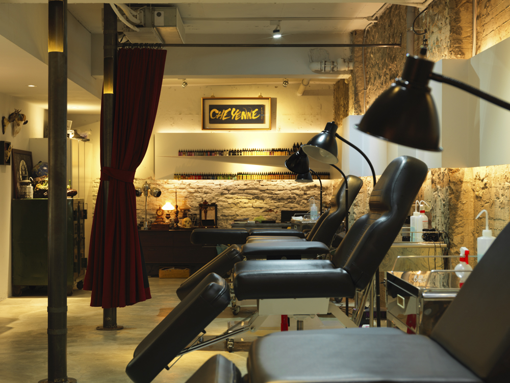
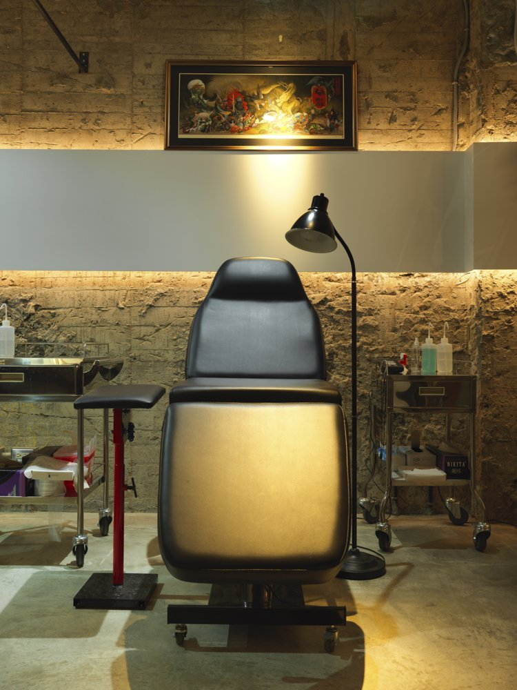
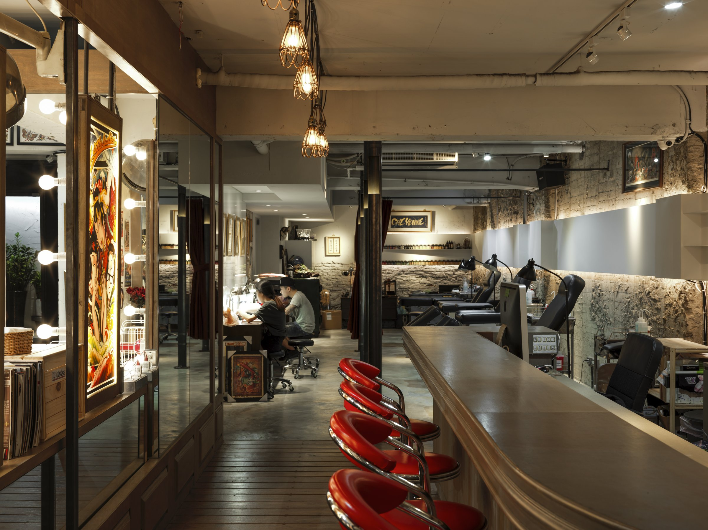
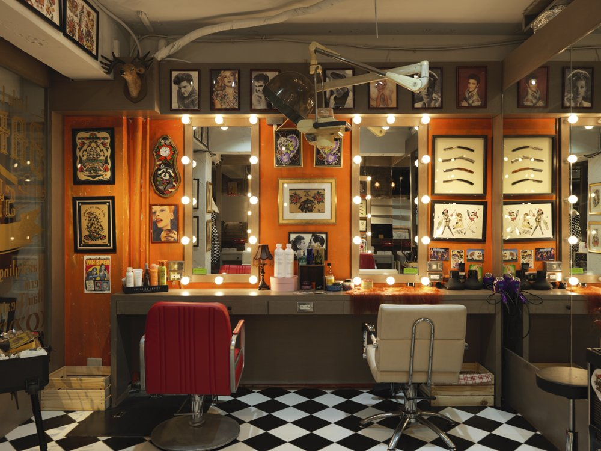
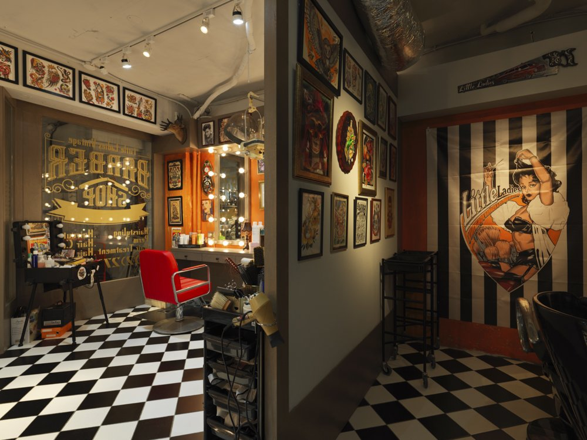

刺青和理髮，表面上是兩件事。但如果你認真想，它們的結構是一樣的——你坐下來，把自己交給另一個人，讓他在你身上做決定。
What does it mean to trust someone with your body?



01
這種信任，不是每個空間都能承接的。把兩件事放在同一條軸線上，不是因為「混搭很有趣」。是因為它們本來就有共同的邏輯。
Not every space can hold that kind of trust. Placing these two things on the same axis isn't about "mixing things up for fun." It's because they already share the same logic.

02
刺青側，乾淨。白色水平鐵件像一筆線條落在粗糙的牆面上，光源連續、照度穩定——這裡需要清楚，需要專注，需要讓人知道你清楚自己在做什麼。
The tattoo side is clean. White horizontal steel lines fall across rough walls like a single brushstroke — continuous light, stable illumination. This side needs clarity, focus, and the assurance that you know exactly what you're doing.


03
理髮側，有溫度。棋盤地坪、Hollywood 燈框、老件圖像，復古語彙構成一個讓人放鬆的等候場景——這裡需要的不是精準，是讓人願意坐下來。兩種信任，需要兩種不同的空間語言。當它們在同一面鏡子裡共存，你才會明白，設計從來不是風格的問題。
The barber side has warmth. Checkerboard floors, Hollywood mirror frames, vintage objects — retro vocabulary that forms a space where people can relax and wait. What's needed here isn't precision, but the willingness to sit down. Two kinds of trust require two different spatial languages. When they coexist in the same mirror, you begin to understand: design was never about style.


04
重新縫合兩個空間，我們只做了一個決定——用一條線，而不是一道牆。白色水平鐵件從刺青側延伸，橫過粗糙的保留牆面，層板帶著光帶貫穿整個立面。它是收納的基準，是視覺的延伸，也是讓兩種語言共存卻不互相干擾的結構。沒有這條線，空間只是兩個隔壁的房間。有了這條線，它變成一個有骨架的場景。這是設計裡最難的部分：不是讓東西變得一致，是讓差異可以並存。
To stitch two spaces back together, we made only one decision — a line, not a wall. White horizontal steel extends from the tattoo side, crossing the rough preserved walls, with shelving and light strips running through the entire facade. It's the baseline for storage, the extension of sight, and the structure that lets two languages coexist without interfering. Without this line, the space would just be two rooms next to each other. With it, it becomes a scene with a skeleton. This is the hardest part of design: not making things uniform, but letting differences coexist.

05
刺青師和理髮師，都在用技術建立信任。ON Design Lab 做的事，其實也是一樣的——把品牌的邏輯，翻譯成空間的語言。你身邊有沒有哪個空間，讓你一走進去就覺得「這裡的人懂自己在做什麼」？
Tattoo artists and barbers both build trust through craft. What ON Design Lab does is really the same thing — translating a brand's logic into the language of space. Is there a place around you that, the moment you walk in, makes you feel "the people here know what they're doing"?
All Photos